Детский меховой зимний слой
gm_gc005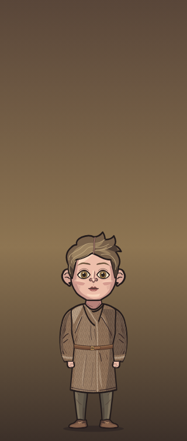
32 × 32
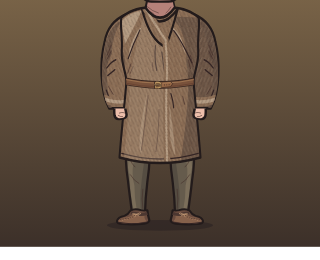
До и после
Древняя Русь XI–XIII веков; показаны детские туники без отдельного мехового зимнего слоя.
Женская меховая шуба
gm_gf007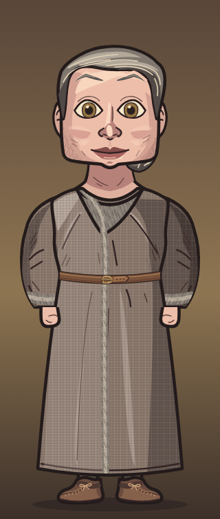
32 × 32
До и после
Белозеро, начало XV века; изображена взрослая монастырская шуба, а не женская вещь Новгорода XIII века.
Овчинный женский кожух простого типа
gm_gf008 32 × 32
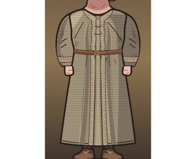
До и после
Белозеро, начало XV века; изображена монастырская шуба, материал не подтверждает овчину, женский простой кожух и срок XIII века.
Грубая сорочица из конопляного или смешанного полотна
gm_gm002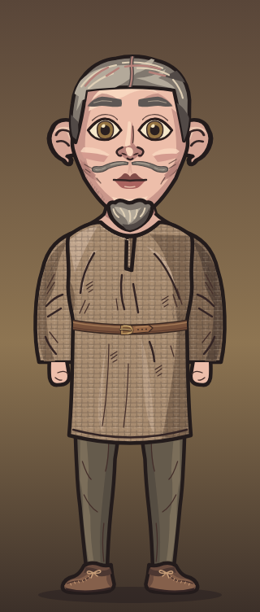
32 × 32
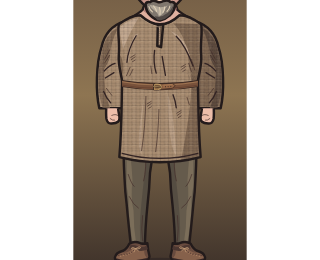
До и после
Вторая половина X века, Гнездово; это женская льняная рубаха погребального костюма, а не грубая конопляная сорочица XIII века.
Простой кожух
gm_gm008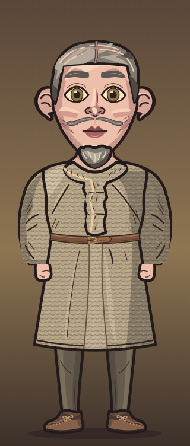
32 × 32
До и после
Белозеро, начало XV века; изображена более поздняя монастырская шуба, а не простой кожух XII–XIII веков.
Плечевая накидка Сиксаля
cloak:siksala_shawl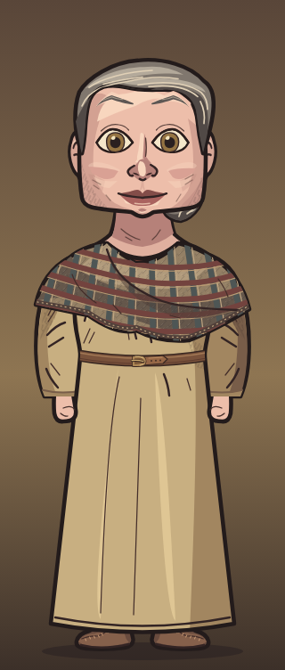
32 × 32
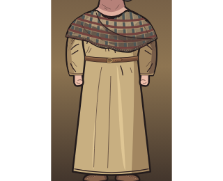
XIII–XIV века, южная Эстония; на фото виден фрагмент реконструированной накидки, а не полный костюм.
шерстяная накидка
cloak_wool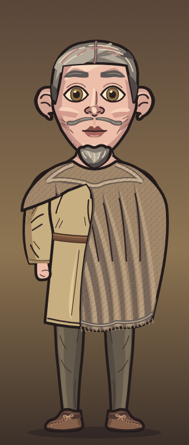
32 × 32
До и после
XIII век, Финляндия; реконструированная накидка похожа по материалу и форме, но не относится к Новгороду.
Шерстяные рукавицы
gm_ac036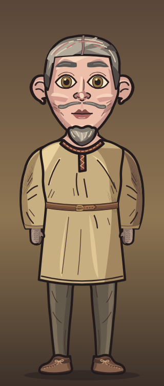
 32 × 32
32 × 32
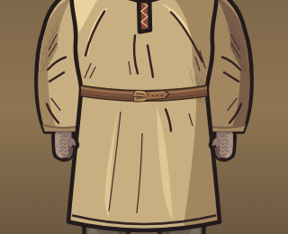
До и после
Волокно не указано; размер не определён как детский, хотя находка датирована XIII веком.
Воинский походный плащ
gm_ar036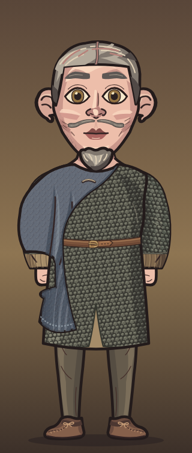
32 × 32
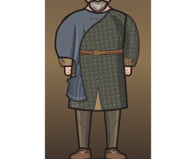
До и после
Икона Новгородской школы около 1130 года; изображён святой в плаще поверх доспеха, не воин в походной одежде XIII века.
Длинная повседневная одежда священнослужителя
gm_cl001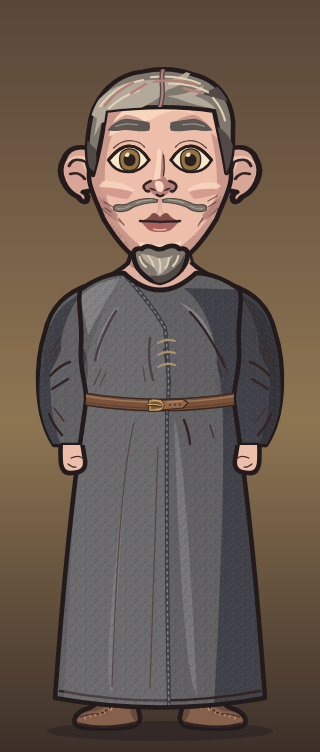
32 × 32
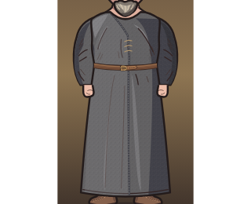
До и после
XVII век, Новгород; это епископское богослужебное облачение, а не повседневная одежда священнослужителя 1200–1250 годов.
Монашеская длинная шерстяная одежда
gm_cl002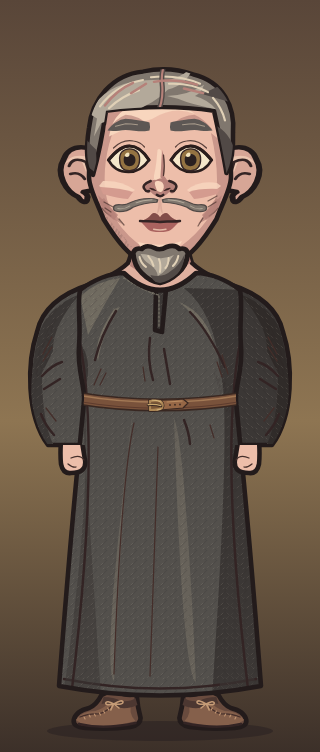
32 × 32
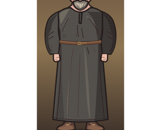
До и после
1318 год, Сен-Омер или Теруанна, Франция; это западный монах, а не русский православный монах, и шерсть не различима.
Монашеская мантия/накидка
gm_cl003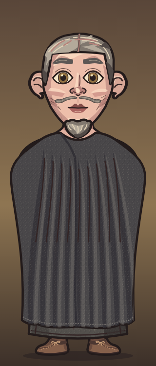
32 × 32
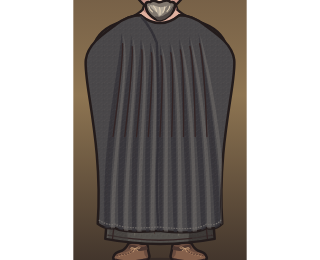
До и после
Около 1250 года, Париж, Франция; показана западная каппа с капюшоном, а не русская монашеская мантия.
Стихарь
gm_cl004 32 × 32
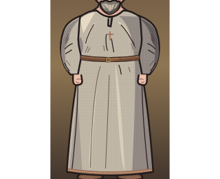
До и после
XVII век, Новгород; верхние епископские ризы закрывают стихарь и не позволяют восстановить его покрой в 1200–1250 годах.
Фелонь
gm_cl006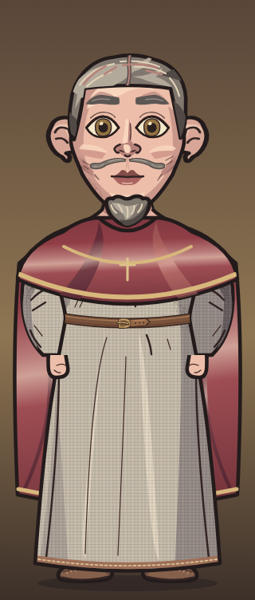
32 × 32
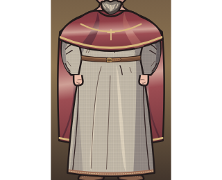
До и после
XVII век, Новгород; показан саккос епископа, а не фелонь, и его поздняя форма отличается богатой отделкой.
Поручи/нарукавники литургические
gm_cl007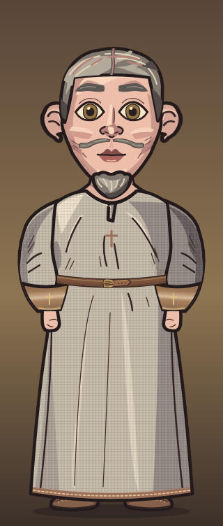
32 × 32
До и после
XVII век, Новгород; отделка рукавов саккоса не подтверждает форму отдельных поручей XII–XIII веков.
Омофор архиерея
gm_cl009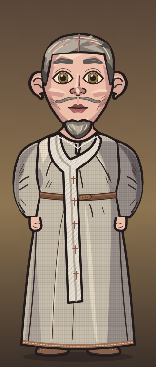
32 × 32
До и после
XVII век, Новгород; показана поздняя иконографическая форма, а не предмет, датированный 1200–1250 годами.
Западноевропейская шерстяная туника до колен
gm_fr001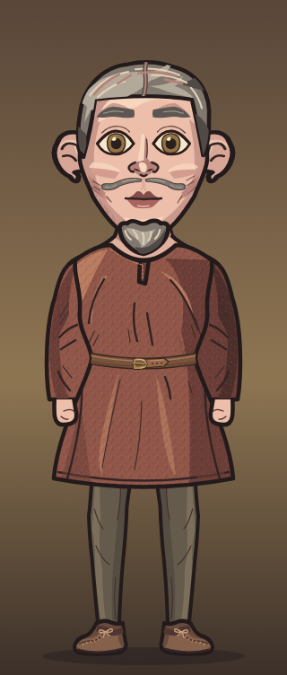
32 × 32
До и после
Западные раздельные чулки-шоссы
gm_fr002 32 × 32
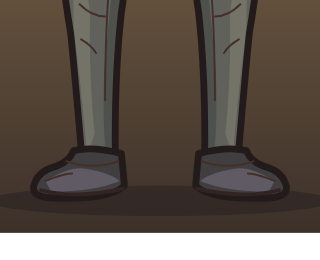
Западный плащ на кольцевой застёжке
gm_fr004 32 × 32
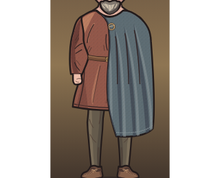
До и после
Плечевая женская одежда, скреплённая парными булавками — пограничная реконструкция
gm_fr005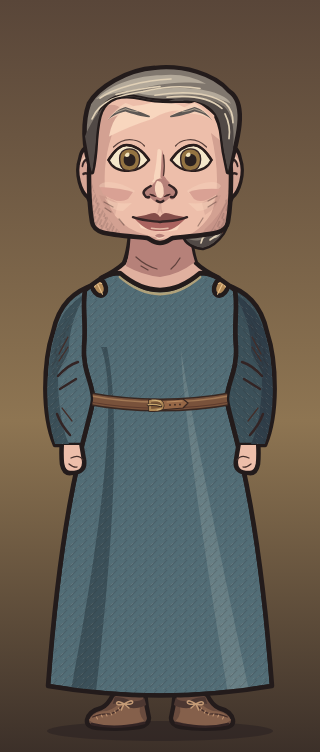
32 × 32
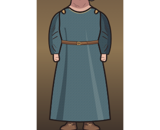
X век, скандинавская одежда по погребальным материалам Пскова; этот более ранний вариант на лямках не подтверждает русскую вещь около 1230 года.
Одежда латинского духовного лица/паломника
gm_fr011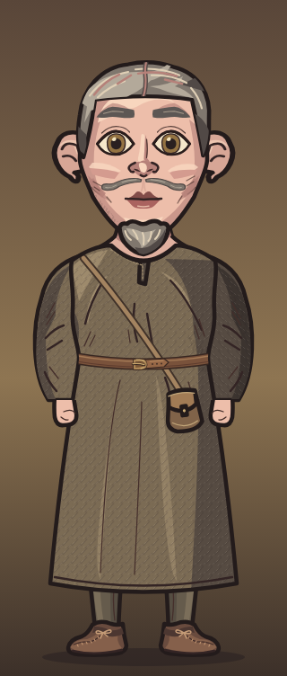
32 × 32
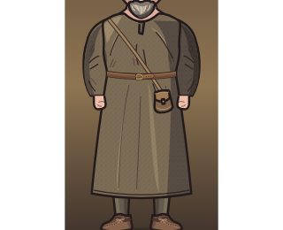
До и после
XIV век, Фландрия; это образ святого на паломническом знаке, а не дорожная одежда русского клирика около 1230 года.
Детская длинная рубаха/сорочица
gm_gc001 32 × 32
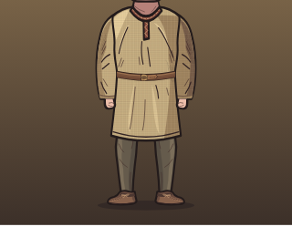
До и после
XI–XIII века, древнерусские материалы; отдельная длинная детская рубаха и ее льняной материал в таблице не выделены.
Детская шерстяная верхняя одежда
gm_gc002 32 × 32
До и после
XI–XIII века, древнерусские материалы; шерсть и отдельный верхний детский слой источником не подтверждены.
Детские порты
gm_gc003 32 × 32
32 × 32
До и после
До После
После XI–XIII века, древнерусские материалы; штаны видны под туникой, но отдельные детские порты не идентифицированы.
Детский шерстяной плащ/накидка
gm_gc004 32 × 32
До и после
XI–XIII века, древнерусские материалы; отдельный детский плащ или накидка, а также шерсть не обозначены.
Детские шерстяные рукавицы
gm_gc007 32 × 32
До и после
ДоПосле XIII–XIV века, Новгород; музейная находка кожаная, а детский размер и шерсть не подтверждены.
Длинная женская сорочица из льна
gm_gf001 32 × 32
До и после
Вторая половина X века, Гнёздово; нижняя длинная рубаха показана в комплексе костюма знатной женщины, более раннего и иного статуса.
Грубая рабочая женская рубаха
gm_gf002 32 × 32
До и после
Вторая половина X века, Гнёздово; это комплекс костюма обеспеченной женщины, а не грубая рабочая рубаха.
Длинная шерстяная верхняя одежда женщины
gm_gf003 32 × 32
До и после
XII век, восточнобалтийский регион на окраине Новгородской земли; погребальный костюм показывает полный ансамбль, но не подтверждает шерсть для этого отдельного слоя.
Рабочая шерстяная верхняя одежда женщины
gm_gf004 32 × 32
До и после
XII — начало XIII века, вятические погребения; таблица показывает полный крестьянский ансамбль, а не отдельный рабочий шерстяной верх.
Женский плащ или мантия
gm_gf006 32 × 32
До и после
Тканевый женский передник
gm_gf009 32 × 32
До и после
XII в., литейная форма из Серенска; прорисовка на браслетной створке не выделяет тканевый передник отдельно.
Поясная клетчатая/полосатая женская одежда типа понёвы — гипотеза
gm_gf013 32 × 32
Конец XIX в., Воронежская губерния; музейный костюм отражает позднюю традицию и не подтверждает ношение понёвы в Новгороде около 1230 г.
Дорожная женская накидка из плотной шерсти
gm_gf014 32 × 32
До и после
XIII век, Финляндия; реконструкция по местным находкам, дорожное назначение не подтверждено.
Сорочица из льняного полотна
gm_gm001 32 × 32
До и после
Вторая половина X в., Гнёздово; это женская льняная реконструкция примерно на 300 лет раньше целевого периода, мужской вариант источник не уточняет.
Шерстяная верхняя рубаха или туникообразная одежда
gm_gm003 32 × 32
До и после
Вторая половина X в., Гнёздово; туника восстановлена по погребальному текстилю, но источник не устанавливает шерсть и она старше новгородского образца XIII в.
Порты из полотна
gm_gm004 32 × 32
Вторая половина X в., Гнёздово; портам реконструкции приданы формы по скандинавским находкам и изображениям, а не по находке из Руси.
Шерстяные зимние порты
gm_gm005 32 × 32
До и после
Вторая половина X в., Гнёздово; материал и зимнее назначение штанов в источнике не установлены.
Обмотки голени
gm_gm006 32 × 32
До и после
Вторая половина X в., Гнёздово; автор реконструкции прямо указывает скандинавские аналоги и отсутствие документированных русских находок обмоток.
Свита
gm_gm007 32 × 32
До и после
Реконструкция основана на фрагменте XII–XIII вв. из Витебска; точный новгородский вариант не подтверждён.
Плащ-мятель
gm_gm010 32 × 32
Икона показывает плащ, но не устанавливает его тождество мятелю и не позволяет определить ткань.
Буро-красный шерстяной плащ
gm_gm011 32 × 32
До и после
1350–1370 гг., Халланд, Швеция: реконструированный местный плащ из плотной шерсти, а не русская вещь XIII века.
Плотная дорожная накидка из шерсти
gm_gm012 32 × 32
До и после
1350–1370 гг., Халланд, Швеция: плащ из плотного wadmal имеет боковое отверстие; дорожное назначение русской накидки не подтверждено.
Тканевый рабочий передник
gm_gm014 32 × 32
До и после
Около 1330 г., Англия: передник показан в полевой сцене рукописи, а новгородские материал и рабочее назначение не подтверждены.
Дорожное покрывало/шерстяное одеяло как накидка
gm_gm018 32 × 32
До и после
1050–1150 гг., Андёя, Норвегия: покрывало использовали как погребальный саван, а не как доказанную русскую дорожную накидку.
Корзно — плащ, застёгнутый на плече
gm_new_korzno 32 × 32
Икона не называет плащ корзном; застёжка показана на груди, а не в отдельном виде на плече.
Вотола — безрукавный плащ поверх свиты
gm_new_votola 32 × 32
До и после
1350–1370 гг., Халланд, Швеция: музейная реконструкция показывает плащ с отверстием для правой руки, а не древнерусскую вотолу поверх свиты.
Шерстяные обмотки
leg_wraps:wool 32 × 32
До и после
1350–1370 гг., Бокстен, Швеция: это обмотки стоп из переработанной одежды, а не длинные шерстяные полосы для голени; материал пары не указан.
Корзно с подкладкой
outfit:korzno 32 × 32
Изображение не позволяет установить наличие подкладки или точное название плаща.
Шерстяная туника с клиньями
outfit:norse_child_tunic 32 × 32
До и после
1350–1370 гг., Халланд, Швеция: взрослая мужская туника более позднего времени, а не детская туника около 1200–1250 гг.
Сиксальская шерстяная туника
outfit:nw_baltic_mens_coat 32 × 32
До и после
1350–1370 гг., Халланд, Швеция: цельная мужская туника вместо перекрывающегося сиксальского кафтана; находка более поздняя и из другого региона.
Синий кууб с бронзовыми спиралями
outfit:nw_baltic_spiral_kuub 32 × 32
До и после
—
Карельский наряд с передником и парными фибулами
outfit:nw_karel_apron_gown 32 × 32
До и после
—
Приладожская туника с кольцевой фибулой
outfit:nw_karel_tunic 32 × 32
XIII–XIV вв., Кекомяки-1, Карельский перешеек: показан женский многослойный наряд с парными овальными фибулами, а не мужская туника с кольцевой фибулой.
Кольчуга и льняное сюрко
outfit:nw_mail_surcoat 32 × 32
—
Скандинавская туника с клиньями
outfit:nw_nordic_gored_tunic 32 × 32
До и после
1350–1370 гг., Халланд, Швеция: находка позднее целевого периода и из Швеции, а не скандинавская туника около 1200–1250 гг.
Норвежское шерстяное платье со складками
outfit:nw_nordic_pleated_gown 32 × 32
До и после
Фрагменты не сохраняют полный покрой и не позволяют установить пол носившего одежду.
Новгородская кольчуга с медной каймой
outfit:nw_nov_copper_mail 32 × 32
XIV–XV вв., Новгород: фрагмент позднее целевого периода, медная кайма на нём не видна.
Новгородская рубаха с клетчатым полотнищем
outfit:nw_nov_womens_rubakha 32 × 32
Находка — фрагмент ткани; полный женский крой рубахи и соединение клетчатого полотнища с ней не установлены.
Рубаха с клетчатым поясным полотнищем
outfit:rus_checked_panel 32 × 32
XI век, Избрижье Верхневолжья; понёва или юбка реконструирована по фрагментам клетки, а её конструкция не доказывает именно поздний новгородский вариант.
Свита с тканой тесьмой
outfit:rus_child_svita 32 × 32
До и после
XI–XIII века, древнерусские материалы; детская одежда показана обобщённо, но свита и тканая тесьма отдельно не идентифицированы.
Одежда с наплечной накидкой
outfit:rus_mantle 32 × 32
До и после
Конец XII — начало XIII века, Новгород; иконографическая монашеская мантия не подтверждает светскую модель короткой наплечной накидки.
Рубаха с длинными рукавами
outfit:ryazan_sleeves 32 × 32
Вторая половина X века, Гнёздово; женская нижняя рубаха на несколько столетий старше рязанского наруча и не подтверждает точный крой вещи XIII века.
Рубаха
outfit:shirt 32 × 32
До и после
Вторая половина X века, Гнёздово; это женская нижняя рубаха из раннего погребального комплекса, а не все мужские, женские и региональные варианты около 1230 года.
порты
pants
32 × 32
900-е годы, захоронение в Маменне, Ютландия; северная реконструкция высокого статуса показывает форму штанов, но не древнерусские порты.
Раздельные шерстяные шоссы
trousers:hose 32 × 32
Около 1250 года, Париж; миниатюра показывает западные chausses, а не все скандинавские и кастильские варианты шерстяных шоссов.
рубаха
tunic 32 × 32
900-е годы, Ютландия; реконструирована богато украшенная шерстяная туника, тогда как исходная рубаха генератора описана как простая.
посконная рубаха
tunic_rag 32 × 32
До и после
Около 1250 года, Париж; западная миниатюра помогает видеть простой силуэт туники, но не показывает конопляное полотно или конкретную русскую рубаху.
наручи пластинчатые
wp_arm_guards 32 × 32
32 × 32
1200–1240 годы, Сахновка; найденный наруч близок по назначению, но конкретная пластинчатая конструкция новгородского варианта не установлена.
ремонт доспеха: заплата кольчуги, связка колец и заклёпок, ремни обвязки
wp_armour_repair 32 × 32
XV в., Европа; изображён готовый ремонт кольчуги, а не переносимый набор колец, заклёпок и ремней Руси 1230 года. Ограничение источника: Источник XV века показывает готовый ремонт кольчуги, а не переносимый ремонтный набор.
пластинчатый доспех (панцирь)
wp_lamellar 32 × 32
поножи пластинчатые
wp_leg_guards 32 × 32
Начало XIII в., Гомель; реконструирован шинный понож, а не кожаная накладка с круглыми пластинами из новгородского ополчения.
кольчужные нагавицы (чулки)
wp_mail_chausses 32 × 32
Кольчуга из плоских колец
wp_mail_flat_ring 32 × 32
До и после
XVI–XVII вв., Муром; музейная байдана показывает плоские кольца, но относится к более позднему доспеху, а название не подтверждено для 1230 года. Ограничение источника: Единственный аналог относится к XVI–XVII векам; применимость плоских колец к 1230 году требует проверки.
длинная кольчуга с разрезами
wp_mail_long 32 × 32
Первая половина XIII в., Черниговское княжество; источник подтверждает длинную кольчугу, но не конкретные боковые разрезы новгородского варианта.
кольца кольчуги (клёпаные и цельносечёные)
wp_mail_rings 32 × 32
Контекст и дата не установлены, Мёлледален, Норвегия; фрагмент чулка показывает кольчатое полотно, а не отдельные кольца из Новгорода.
кольчуга
wp_mail_shirt 32 × 32
Первая половина XIII в., Черниговское княжество; это реконструкция по материалам Гомеля, а кожаная окантовка новгородского варианта отдельно не показана.
поддоспешная одежда (подкольчужник, стёганка)
wp_padded 32 × 32
До и после
Первая половина XIII в., Черниговское княжество; реконструкция использует набивку пенькой, а определение игры допускает лён, шерсть и кожаную подкладку.
чешуйчатый доспех
wp_scale 32 × 32
Корзно с застёжкой на плече
cloak:rus_korzno 32 × 32
Меховая подкладка не различима; икона показывает форму плаща и застёжку на груди.
Кожаные рабочие рукавицы
gm_ac037 32 × 32
Находка не подтверждает именно ремесленное назначение рукавицы.
Кожаные/шерстяные воинские рукавицы — без латных пластин
gm_ar038 32 × 32
До и после
Находка не подтверждает военное назначение или шерстяную подкладку.
Кожаный ремесленный передник
gm_gm015 32 × 32
До и после
Англия, 1310–1325; материал передника не указан, новгородский кожаный вариант не показан.
меховая набедренная повязка
loincloth_fur 32 × 32
До и после
Фото Эци, IV тыс. до н. э., — дальний аналог. Наличие такого костюма в Новгороде XIII века не подтверждено. Ограничение источника: Источник — только повязка Эци IV тысячелетия до н. э.; источника для Новгорода 1230 года нет. Решение принимается при интеграции.
Кожух
outfit:kozukh 32 × 32
До и после
Фигура реконструирована по аналогии с гуцульским полушубком; мех и точный крой древнерусского кожуха не установлены.
Магдебургский нагрудник поверх кольчуги
outfit:nw_magdeburg_plate_coat 32 × 32
Статуя передаёт доспех святого и не подтверждает полный комплект как полевую норму.
Новгородский женский кожух
outfit:nw_nov_womens_fur_coat 32 × 32
До и после
Россия, XVIII–XX века; на музейном образце мех открыт снаружи и сочетается с тканевыми панелями, тогда как древнерусский кожух обычно носили мехом внутрь.
Юаньский охотничий халат на меху
outfit:yuan_fur_hunt_robe 32 × 32
Юань, 1280 год, позже целевого окна; халат показан на всаднике, а не как отдельный предмет.
кожаные или шерстяные воинские рукавицы (без пластин)
wp_military_gloves 32 × 32
До и после
VII–IX вв., Северный Кавказ; это аланские безпальцевые перчатки, а для воинских рукавиц Руси XIII века такой крой не подтверждён.
Епитрахиль
gm_cl005 32 × 32
До и после
Конец XIV — начало XV века, Петрова церковь в Сербии; вещь на несколько десятилетий позднее целевого периода Новгорода.
Орарь дьякона
gm_cl008 32 × 32
До и после
1320 год, монастырь Грачаница; это сербская фреска, а не находка из Новгорода.
Тонкое западноевропейское сукно в одежде приезжего/купца
gm_fr009 32 × 32
До и после
XIII век, Сицилия, Италия; изображён фрагмент ткани, а не готовая одежда приезжего купца на Руси.
Тонкая шерстяная одежда зажиточной женщины
gm_gf005 32 × 32
До и после
X век, Хвиле́хой, Ютландия, Дания; научная реконструкция одежды знатной женщины из более раннего памятника за пределами Руси.
Покрытая тканью меховая шуба
gm_gm009 32 × 32
До и после
VII–IX вв., Кавказский регион; это более ранний аланский кафтан с меховой подкладкой, а не русская шуба XIII века.
Тонкая шерстяная статусная верхняя одежда
gm_gm016 32 × 32
До и после
X век, погребение в Маммене, Ютландия, Дания; реконструкция более ранней датской шерстяной одежды, не русской вещи XIII века.
Изяславский кафтан
outfit:izyaslav_kaftan 32 × 32
До и после
XIII век, Большое Шепетовское городище, вероятно Изяславль; реконструкция передаёт предполагаемый вид фрагментарно сохранившегося предмета.
Новгородская рубаха с золотным шитьём
outfit:nw_nov_sofia_tunic 32 × 32
X век, погребение Бьеррингхёй в Маммене, Дания; реконструкция шерстяной туники с вышивкой, но не золотошвейная рубаха Новгорода XIII века.
Рубаха с золотными обшлагами
outfit:rus_gilt_cuff_tunic 32 × 32
X век, Бьеррингхёй, Дания; реконструированы манжеты рукавов и штанин из шёлка с золотистой тесьмой, а не обшлага русской рубахи XIII века.
Рубаха с расшитым шёлковым оплечьем
outfit:rus_gold_yoke_gown 32 × 32
Доканунгольский период, точная дата не указана; находка из Чаадаево, вероятно часть головного убора, а не шелковое оплечье рубахи.
Степное платье с правым запахом
outfit:steppe_dress 32 × 32
XIII–XIV века, Иран или Центральная Азия; музейный халат под властью монголов не подтверждает отдельную степную женскую одежду с правым запахом.
Степной халат со сборками
outfit:steppe_robe 32 × 32
До и после
XIII–XIV века, погребение Онгут, Внутренняя Монголия; археологический халат показывает степную одежду, но он позднее целевого диапазона и его модель со сборками не установлена.
Наряд Юань с левой застёжкой
outfit:yuan_brocade_coat 32 × 32
До и после
XIII–XIV века, погребение Онгут, Внутренняя Монголия; это монгольская находка, но источник не устанавливает, что халат принадлежал Юань или имел левую застёжку.
Распашная накидка Готланда
cloak:gotland_open 32 × 32
Около 1225 года, собор Висбю, Готланд; скульптура показывает накидку, но не доказывает именно распашной крой.
Новгородский мятель
cloak:novgorod_mantle 32 × 32
Первая половина XIV века, Новгород; икона позднее целевого периода 1200–1250 годов.
Синие обмотки Сиксаля
leg_wraps:siksala 32 × 32
X–XIII века, Ливония в пределах современной Латвии; реконструкция близкого балтийского костюма, а не находка из Сиксаля в Эстонии.
Доспех
outfit:armor 32 × 32
Около 1244–1254 годов, Париж, Франция; рукопись показывает кольчугу в западноевропейском снаряжении, а генераторный доспех не ограничен этим видом.
Плащ
outfit:cloak 32 × 32
1243–1250 годы, Наумбург, Германия; это придворный плащ знатной женщины в каменной скульптуре, не произвольный русский плащ.
Наумбургская накидка с парными застёжками
outfit:naumburg_clasp_mantle 32 × 32
До и после
1243–1250 годы, Наумбург, Германия; это изображённая мода знати середины XIII века, а не сохранившаяся тканевая накидка.
Ламеллярный панцирь из Гомия
outfit:nw_gomel_lamellar 32 × 32
Полный комплект не сохранился; реконструкция начала XIII века основана на материалах Гомеля и не является новгородской моделью.
Готландская туника с перекинутым плащом
outfit:nw_gotland_mens_cloak 32 × 32
До и после
Рельеф около 1200 года показывает библейскую сцену, но источник не подтверждает именно мужской готландский плащ, его застёжку или бытовое ношение.
Готландское платье с ниспадающей накидкой
outfit:nw_gotland_womens_mantle 32 × 32
До и после
Скульптура датирована второй половиной XIII века, позже рамки 1200–1250 годов; это религиозный образ, а не бытовой костюм.
Кольчуга поверх стёганки
outfit:nw_mail_hauberk 32 × 32
Французская библейская рукопись середины XIII века изображает современную художнику военную одежду; стёганый слой под кольчугой не виден.
Новгородский пластинчатый доспех
outfit:nw_nov_lamellar 32 × 32
Схема объединяет находки XIII–XV веков и показывает отдельные пластины, а не полный панцирь или надёжно датированную модель 1200–1250 годов.
Новгородский чешуйчатый панцирь
outfit:nw_nov_scale 32 × 32
Икона около 1130 года старше целевого периода; источник не определяет видимый панцирь именно как чешуйчатый.
Новгородская свита поверх сорочицы
outfit:nw_nov_svita 32 × 32
До и после
Реконструкция относится к Витебску, а не к Новгороду; наличие отдельной сорочицы под свитой этим изображением не подтверждено.
Новгородское платье с узорными лентами
outfit:nw_nov_trimmed_gown 32 × 32
До и после
Реконструкция основана на материалах вятичей XII–начала XIII века, а не Новгорода; изображён полный женский комплекс, не точная модель платья.
Свита
outfit:svita 32 × 32
До и после
Восстановленная длина и застёжки реконструированы по неполному фрагменту ткани; конкретный новгородский вариант источником не выделен.
Порты с напуском
trousers:gathered 32 × 32
Камень датирован VIII–XI веками и происходит с Готланда; это гораздо более раннее и регионально иное изображение, чем новгородский костюм XIII века.
Простые штаны
trousers:plain_trousers 32 × 32
VII–IX вв., Кавказский регион, аланская культура: более ранний предмет из другой культурной области; схема не подтверждает покрой всех перечисленных культур около 1200–1250 гг.
Прямые порты
trousers:straight
32 × 32
Конец XIX — начало XX в., Западная Сибирь: этнографический русский предмет намного позднее 1200–1250 гг. и не доказывает крой прямых портов в XIII веке.
Лицевая маска коня
wp_horse_armour 32 × 32
Только для исследования
Изображена только лицевая маска головы; источник не подтверждает полный конский доспех или покрытие всего коня. Ограничение источника: Ромашки, 1200–1240: показана только лицевая маска коня. Источник не подтверждает полный конский доспех.